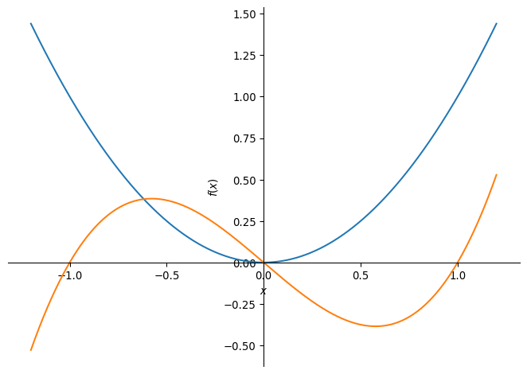
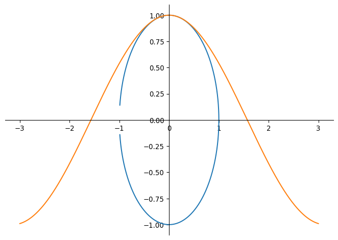
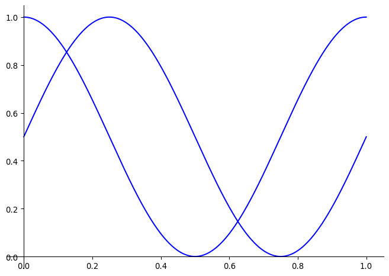
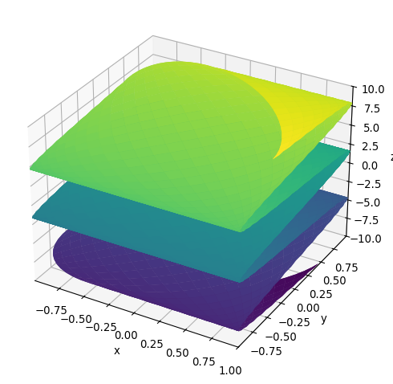
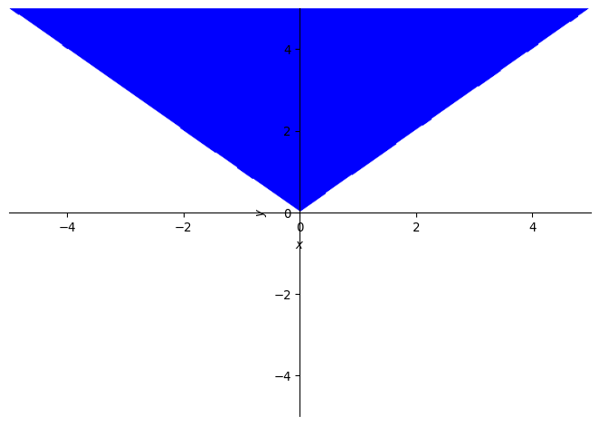
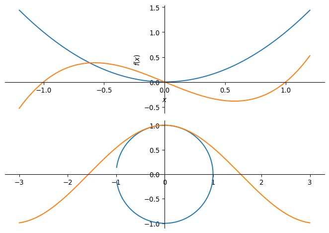

import sympy
from sympy import I, pi, oo
sympy.init_printing()
from IPython.display import display
print("sympy: ", sympy.__version__)sympy: 1.14.0\(~\)

\(~\)
import sympy
from sympy import I, pi, oo
sympy.init_printing()
from IPython.display import display
print("sympy: ", sympy.__version__)sympy: 1.14.0x = sympy.Symbol('x')
print(x.is_real)Noney = sympy.Symbol('y', real=True)
y.is_realTruez = sympy.Symbol('z', complex=True)
z.is_complexTrueprint(z.is_real)Nonex = sympy.Symbol('x')
y = sympy.Symbol('y', positive=True)
z = sympy.Symbol('z', negative=True)sympy.sqrt(x**2)\(\displaystyle \sqrt{x^{2}}\)
sympy.sqrt(y**2)\(\displaystyle y\)
sympy.sqrt(z**2)\(\displaystyle - z\)
n1 = sympy.Symbol('n')
n2 = sympy.Symbol('n', integer=True)
n3 = sympy.Symbol('n', odd=True)
n4 = sympy.Symbol('n', even=True)sympy.cos(n1*pi)\(\displaystyle \cos{\left(\pi n \right)}\)
sympy.cos(n2*pi)\(\displaystyle \left(-1\right)^{n}\)
sympy.cos(n3*pi)\(\displaystyle -1\)
sympy.cos(n4*pi)\(\displaystyle 1\)
a, b, c = sympy.symbols('a, b, c', negative=True)d, e, f = sympy.symbols('d, e, f', positive=True)We cannot directly use the built-in Python objects for integers, int, and floating-point numbers, float, and so on. Instead, sympy provides the classes sympy.Integer and sympy.Float for representing integers and floating-point numbers within the sympy framework
This distinction is important to be aware of when working with sympy, but fortunately we rarely need to concern ourselves with creating objects of type sympy.Integer and sympy.Float to representing specific numbers, \(~\)since sympy automatically promotes Python numbers to instances of these classes when they occur in sympy expressions
i = sympy.Integer(18)
type(i)sympy.core.numbers.Integeri.is_Integer, i.is_real, i.is_odd, i.is_even(True, True, False, True)f = sympy.Float(2.3)
type(f)sympy.core.numbers.Floatf.is_Float, f.is_real, f.is_complex(True, True, True)i, f = sympy.sympify(19), sympy.sympify(2.3)
type(i), type(f)(sympy.core.numbers.Integer, sympy.core.numbers.Float)While the Symbol with integer=True represents some integer, \(\,\)the Integer instance represents a specific integer
For both cases, \(\,\)the is_integer attribute is True, \(\,\)but there is also an attribute is_Integer (note the capital I), \(\,\)which is only True for Integer instances
n = sympy.Symbol('n', integer=True)
n.is_integer, n.is_Integer, n.is_positive, n.is_Symbol(True, False, None, True)i = sympy.Integer(19)
i.is_integer, i.is_Integer, i.is_positive, i.is_Symbol(True, True, True, False)sympy.Integer('19' *20)\(\displaystyle 1919191919191919191919191919191919191919\)
sympy.Integer('12_345_678'), sympy.Integer(12_345_678)\(\displaystyle \left( 12345678, \ 12345678\right)\)
# great common division, leat common multiple
sympy.igcd(36, 15), sympy.ilcm(7, 34)\(\displaystyle \left( 3, \ 238\right)\)
sympy are arbitrary precision, \(\,\)meaning that they have no fixed lower and upper bounds, \(\,\)which is the case when representing integers with a specific bit-size, as, for example, in numpyi = sympy.Integer(19)
i**100\(\displaystyle 75051624198251984443456989853061891539043939434909537798332873934101480896578056472849915762891214746171016655874432115640378001\)
sympy.factorial(100)\(\displaystyle 93326215443944152681699238856266700490715968264381621468592963895217599993229915608941463976156518286253697920827223758251185210916864000000000000000000000000\)
Like Integer, \(\,\)Float is arbitrary precision, \(\,\)in contrast to Python’s built-in float type and the float types in numpy. \(\,\)This means that any Float can represent a float with arbitrary number of decimals
When a Float instance is created using its constructor, \(\,\)there are two arguments: the first argument is a Python float or a string representing a floating-point number, and the second (optional) argument is the precision (number of significant decimal digits) of the Float object
# create a string representation with 25 decimals
f'{0.3:.25f}' '0.2999999999999999888977698'sympy.Float(0.3, 25) \(\displaystyle 0.2999999999999999888977698\)
sympy.Float('0.3', 25)\(\displaystyle 0.3\)
sympy.Float('123 456 789.123_456', '')\(\displaystyle 123456789.123456\)
r0 = sympy.Rational(11, 13)
r0\(\displaystyle \frac{11}{13}\)
r0.p, r0.q\(\displaystyle \left( 11, \ 13\right)\)
r1 = sympy.Rational(2, 3)
r2 = sympy.Rational(4, 5)r1 * r2\(\displaystyle \frac{8}{15}\)
r1 / r2\(\displaystyle \frac{5}{6}\)
sympy.Rational(0.2), sympy.Rational('0.2')\(\displaystyle \left( \frac{3602879701896397}{18014398509481984}, \ \frac{1}{5}\right)\)
\(\displaystyle \gamma = \lim_{n \to \infty} \left( \sum_{k=1}^n \frac{1}{k} -\ln n\right)\)
sympy.pi, sympy.E, sympy.EulerGamma, sympy.I, sympy.oo\(\displaystyle \left( \pi, \ e, \ \gamma, \ i, \ \infty\right)\)
x, y, z = sympy.symbols('x, y, z')f = sympy.Function('f')
type(f)sympy.core.function.UndefinedFunctionf(x)\(\displaystyle f{\left(x \right)}\)
g = sympy.Function('g')(x, y, z)
g\(\displaystyle g{\left(x,y,z \right)}\)
g.free_symbols\(\displaystyle \left\{x, y, z\right\}\)
sympy.sinsinsympy.sin(x)\(\displaystyle \sin{\left(x \right)}\)
sympy.sin(pi *1.5)\(\displaystyle -1\)
n = sympy.Symbol('n', integer=True)
sympy.sin(pi * n)\(\displaystyle 0\)
h = sympy.Lambda(x, x**2)
h\(\displaystyle \left( x \mapsto x^{2} \right)\)
h(5)\(\displaystyle 25\)
h(1 + x)\(\displaystyle \left(x + 1\right)^{2}\)
x = sympy.Symbol('x')
expr = 1 +2*x**2 +3*x**3
expr\(\displaystyle 3 x^{3} + 2 x^{2} + 1\)
expr.args\(\displaystyle \left( 1, \ 2 x^{2}, \ 3 x^{3}\right)\)
expr.args[2]\(\displaystyle 3 x^{3}\)
expr.args[2].args\(\displaystyle \left( 3, \ x^{3}\right)\)
expr.args[2].args[1]\(\displaystyle x^{3}\)
expr.args[2].args[1].args\(\displaystyle \left( x, \ 3\right)\)
expr.args[2].args[1].args[1]\(\displaystyle 3\)
expr.args[2].args[1].args[1].args\(\displaystyle \left( \right)\)
expr = 2 * (x**2 - x) - x * (x + 1)
expr\(\displaystyle 2 x^{2} - x \left(x + 1\right) - 2 x\)
sympy.simplify(expr)\(\displaystyle x \left(x - 3\right)\)
expr.simplify()\(\displaystyle x \left(x - 3\right)\)
expr\(\displaystyle 2 x^{2} - x \left(x + 1\right) - 2 x\)
expr = 2 * sympy.cos(x) * sympy.sin(x)
expr\(\displaystyle 2 \sin{\left(x \right)} \cos{\left(x \right)}\)
sympy.simplify(expr)\(\displaystyle \sin{\left(2 x \right)}\)
expr = sympy.exp(x) * sympy.exp(y)
expr\(\displaystyle e^{x} e^{y}\)
sympy.simplify(expr)\(\displaystyle e^{x + y}\)
expr = (x + 1) * (x + 2)
expr\(\displaystyle \left(x + 1\right) \left(x + 2\right)\)
expr.expand()\(\displaystyle x^{2} + 3 x + 2\)
sympy.sin(x + y).expand(trig=True)\(\displaystyle \sin{\left(x \right)} \cos{\left(y \right)} + \sin{\left(y \right)} \cos{\left(x \right)}\)
a, b = sympy.symbols('a, b', positive=True)
sympy.log(a * b).expand(log=True)\(\displaystyle \log{\left(a \right)} + \log{\left(b \right)}\)
sympy.exp(I*a + b).expand(complex=True)\(\displaystyle i e^{b} \sin{\left(a \right)} + e^{b} \cos{\left(a \right)}\)
sympy.expand((a * b)**x, power_base=True)\(\displaystyle a^{x} b^{x}\)
sympy.exp(I*(a -b)*x).expand(power_exp=True)\(\displaystyle e^{i a x} e^{- i b x}\)
sympy.factor(x**2 - 1)\(\displaystyle \left(x - 1\right) \left(x + 1\right)\)
sympy.factor(x *sympy.cos(y) + x *sympy.sin(z))\(\displaystyle x \left(\sin{\left(z \right)} + \cos{\left(y \right)}\right)\)
expr = x + y + x * y * z
expr\(\displaystyle x y z + x + y\)
expr.collect(x)\(\displaystyle x \left(y z + 1\right) + y\)
expr.collect(y)\(\displaystyle x + y \left(x z + 1\right)\)
expr = sympy.cos(x + y) + sympy.sin(x - y)expr1 = expr.expand(trig=True)
expr1\(\displaystyle - \sin{\left(x \right)} \sin{\left(y \right)} + \sin{\left(x \right)} \cos{\left(y \right)} - \sin{\left(y \right)} \cos{\left(x \right)} + \cos{\left(x \right)} \cos{\left(y \right)}\)
expr2 = expr1.collect([sympy.cos(x), sympy.sin(x)])
expr2\(\displaystyle \left(- \sin{\left(y \right)} + \cos{\left(y \right)}\right) \sin{\left(x \right)} + \left(- \sin{\left(y \right)} + \cos{\left(y \right)}\right) \cos{\left(x \right)}\)
expr3 = expr2.collect(sympy.cos(y) - sympy.sin(y))
expr3\(\displaystyle \left(\sin{\left(x \right)} + \cos{\left(x \right)}\right) \left(- \sin{\left(y \right)} + \cos{\left(y \right)}\right)\)
sympy.logcombine(sympy.log(a) - sympy.log(b))\(\displaystyle \log{\left(\frac{a}{b} \right)}\)
expr1 = 1/(x**2 + 3*x + 2)
expr1\(\displaystyle \frac{1}{x^{2} + 3 x + 2}\)
sympy.apart(expr1, x)\(\displaystyle - \frac{1}{x + 2} + \frac{1}{x + 1}\)
expr2 = 1 / (y * x + y) + 1 / (1+x)
expr2\(\displaystyle \frac{1}{x y + y} + \frac{1}{x + 1}\)
sympy.together(expr2)\(\displaystyle \frac{y + 1}{y \left(x + 1\right)}\)
expr3 = y / (y * x + y)
expr3\(\displaystyle \frac{y}{x y + y}\)
sympy.cancel(expr3)\(\displaystyle \frac{1}{x + 1}\)
(x + y).subs(x, y)\(\displaystyle 2 y\)
sympy.sin(x * sympy.exp(x)).subs(x, y)\(\displaystyle \sin{\left(y e^{y} \right)}\)
sympy.sin(x * z).subs({z: sympy.exp(y), x: y, sympy.sin: sympy.cos})\(\displaystyle \cos{\left(y e^{y} \right)}\)
expr = x * y + z**2 *x
expr\(\displaystyle x y + x z^{2}\)
values = {x: 1.25, y: 0.4, z: 3.2}
expr.subs(values)\(\displaystyle 13.3\)
sympy.N(1 + pi)\(\displaystyle 4.14159265358979\)
sympy.N(1 + pi, 50)\(\displaystyle 4.1415926535897932384626433832795028841971693993751\)
(x + 1/pi).evalf(10)\(\displaystyle x + 0.3183098862\)
expr = sympy.sin(pi * x * sympy.exp(x))
expr\(\displaystyle \sin{\left(\pi x e^{x} \right)}\)
[expr.subs(x, i).evalf(3) for i in range(0, 10)] # rather slow\(\displaystyle \left[ 0, \ 0.774, \ 0.642, \ 0.722, \ 0.944, \ 0.205, \ 0.974, \ 0.977, \ -0.87, \ -0.695\right]\)
expr_func = sympy.lambdify(x, expr)
expr_func(1.0)\(\displaystyle 0.773942685266709\)
import numpy as np
xvalues = np.arange(0, 10)
expr_func = sympy.lambdify(x, expr, 'numpy')
expr_func(xvalues) # efficient methodarray([ 0. , 0.77394269, 0.64198244, 0.72163867, 0.94361635,
0.20523391, 0.97398794, 0.97734066, -0.87034418, -0.69512687])f = sympy.Function('f')(x)
sympy.diff(f, x) # equivalent to f.diff(x)\(\displaystyle \frac{d}{d x} f{\left(x \right)}\)
sympy.diff(f, x, x)\(\displaystyle \frac{d^{2}}{d x^{2}} f{\left(x \right)}\)
sympy.diff(f, x, 3) # equivalent to sympy.diff(f, x, x, x)\(\displaystyle \frac{d^{3}}{d x^{3}} f{\left(x \right)}\)
g = sympy.Function('g')(x, y)
g.diff(x, y) # equivalent to sympy.diff(g, x, y)\(\displaystyle \frac{\partial^{2}}{\partial y\partial x} g{\left(x,y \right)}\)
g.diff(x, 3, y, 2) # equivalent to sympy.diff(g, x, x, x, y, y)\(\displaystyle \frac{\partial^{5}}{\partial y^{2}\partial x^{3}} g{\left(x,y \right)}\)
expr = x**4 + x**3 + x**2 + x + 1
expr\(\displaystyle x^{4} + x^{3} + x^{2} + x + 1\)
expr.diff(x)\(\displaystyle 4 x^{3} + 3 x^{2} + 2 x + 1\)
expr.diff(x, x)\(\displaystyle 2 \left(6 x^{2} + 3 x + 1\right)\)
expr = (x + 1)**3 * y ** 2 * (z - 1)
expr\(\displaystyle y^{2} \left(x + 1\right)^{3} \left(z - 1\right)\)
expr.diff(x, y, z)\(\displaystyle 6 y \left(x + 1\right)^{2}\)
expr = sympy.sin(x * y) * sympy.cos(x / 2)
expr\(\displaystyle \sin{\left(x y \right)} \cos{\left(\frac{x}{2} \right)}\)
expr.diff(x)\(\displaystyle y \cos{\left(\frac{x}{2} \right)} \cos{\left(x y \right)} - \frac{\sin{\left(\frac{x}{2} \right)} \sin{\left(x y \right)}}{2}\)
expr = sympy.functions.special.polynomials.hermite(x, 0)
expr\(\displaystyle \frac{2^{x} \sqrt{\pi}}{\Gamma\left(\frac{1}{2} - \frac{x}{2}\right)}\)
expr.diff(x)\(\displaystyle \frac{2^{x} \sqrt{\pi} \operatorname{polygamma}{\left(0,\frac{1}{2} - \frac{x}{2} \right)}}{2 \Gamma\left(\frac{1}{2} - \frac{x}{2}\right)} + \frac{2^{x} \sqrt{\pi} \log{\left(2 \right)}}{\Gamma\left(\frac{1}{2} - \frac{x}{2}\right)}\)
d = sympy.Derivative(sympy.exp(sympy.cos(x)), x)
d\(\displaystyle \frac{d}{d x} e^{\cos{\left(x \right)}}\)
d.doit()\(\displaystyle - e^{\cos{\left(x \right)}} \sin{\left(x \right)}\)
a, b, x, y = sympy.symbols('a, b, x, y')
f = sympy.Function('f')(x)
sympy.integrate(f)\(\displaystyle \int f{\left(x \right)}\, dx\)
sympy.integrate(f, (x, a, b))\(\displaystyle \int\limits_{a}^{b} f{\left(x \right)}\, dx\)
sympy.integrate(sympy.sin(x))\(\displaystyle - \cos{\left(x \right)}\)
sympy.integrate(sympy.sin(x), (x, a, b))\(\displaystyle \cos{\left(a \right)} - \cos{\left(b \right)}\)
sympy.integrate(sympy.exp(-x**2), (x, 0, oo))\(\displaystyle \frac{\sqrt{\pi}}{2}\)
a, b, c = sympy.symbols('a, b, c', positive=True)
sympy.integrate(a * sympy.exp(-((x -b)/c)**2), (x, -oo, oo))\(\displaystyle \sqrt{\pi} a c\)
sympy.integrate(sympy.sin(x * sympy.cos(x))) # No analytic integration\(\displaystyle \int \sin{\left(x \cos{\left(x \right)} \right)}\, dx\)
expr = sympy.sin(x*sympy.exp(y))
expr\(\displaystyle \sin{\left(x e^{y} \right)}\)
sympy.integrate(expr, x)\(\displaystyle - e^{- y} \cos{\left(x e^{y} \right)}\)
expr = (x + y)**2
expr\(\displaystyle \left(x + y\right)^{2}\)
sympy.integrate(expr, x)\(\displaystyle \frac{x^{3}}{3} + x^{2} y + x y^{2}\)
sympy.integrate(expr, x, y)\(\displaystyle \frac{x^{3} y}{3} + \frac{x^{2} y^{2}}{2} + \frac{x y^{3}}{3}\)
sympy.integrate(expr, (x, 0, 1), (y, 0, 1))\(\displaystyle \frac{7}{6}\)
sympy.limit(sympy.sin(x) / x, x, 0)\(\displaystyle 1\)
x, h = sympy.symbols('x, h')
f = sympy.Function('f')
diff_limit = (f(x + h) - f(x)) / hsympy.limit(diff_limit.subs(f, sympy.cos), h, 0)\(\displaystyle - \sin{\left(x \right)}\)
sympy.limit(diff_limit.subs(f, sympy.sin), h, 0)\(\displaystyle \cos{\left(x \right)}\)
expr = (x**2 - 3*x) / (2*x - 2)
expr\(\displaystyle \frac{x^{2} - 3 x}{2 x - 2}\)
p = sympy.limit(expr/x, x, sympy.oo)q = sympy.limit(expr - p*x, x, sympy.oo)p, q\(\displaystyle \left( \frac{1}{2}, \ -1\right)\)
n = sympy.symbols('n', integer=True)
x = sympy.Sum(1/(n**2), (n, 1, oo))
x\(\displaystyle \sum_{n=1}^{\infty} \frac{1}{n^{2}}\)
x.doit()\(\displaystyle \frac{\pi^{2}}{6}\)
x = sympy.Product(n, (n, 1, 7))
x\(\displaystyle \prod_{n=1}^{7} n\)
x.doit()\(\displaystyle 5040\)
x = sympy.Symbol('x')
sympy.Sum((x)**n/(sympy.factorial(n)), (n, 1, oo)).doit().simplify()\(\displaystyle e^{x} - 1\)
x = sympy.Symbol('x')
sympy.solve(x**2 +2*x -3)\(\displaystyle \left[ -3, \ 1\right]\)
a, b, c = sympy.symbols('a, b, c')
sympy.solve(a *x**2 +b *x +c, x)\(\displaystyle \left[ \frac{- b - \sqrt{- 4 a c + b^{2}}}{2 a}, \ \frac{- b + \sqrt{- 4 a c + b^{2}}}{2 a}\right]\)
sympy.solve(sympy.sin(x) - sympy.cos(x), x)\(\displaystyle \left[ \frac{\pi}{4}\right]\)
sympy.solve(sympy.exp(x) + 2 *x, x)\(\displaystyle \left[ - W\left(\frac{1}{2}\right)\right]\)
The value of LambertW function \(W(z)\) is such that \(z = W(z)\exp(W(z))\) for any complex number \(z\)
-sympy.LambertW(1/2)\(\displaystyle -0.351733711249196\)
sols = sympy.solve(x**5 - x**2 + 1, x)
for i in range(5):
display(sols[i])\(\displaystyle \operatorname{CRootOf} {\left(x^{5} - x^{2} + 1, 0\right)}\)
\(\displaystyle \operatorname{CRootOf} {\left(x^{5} - x^{2} + 1, 1\right)}\)
\(\displaystyle \operatorname{CRootOf} {\left(x^{5} - x^{2} + 1, 2\right)}\)
\(\displaystyle \operatorname{CRootOf} {\left(x^{5} - x^{2} + 1, 3\right)}\)
\(\displaystyle \operatorname{CRootOf} {\left(x^{5} - x^{2} + 1, 4\right)}\)
#sympy.solve(sympy.tan(x) + x, x)NotImplementedError: multiple generators [x, tan(x)] No algorithms are implemented to solve equation x + tan(x)
eq1 = x +2 *y -1
eq2 = x -y +1sympy.solve([eq1, eq2], [x, y], dict=True)\(\displaystyle \left[ \left\{ x : - \frac{1}{3}, \ y : \frac{2}{3}\right\}\right]\)
eq1 = x**2 -y
eq2 = y**2 -xsols = sympy.solve([eq1, eq2], [x, y], dict=True)
for i in range(4):
display(sols[i])\(\displaystyle \left\{ x : 0, \ y : 0\right\}\)
\(\displaystyle \left\{ x : 1, \ y : 1\right\}\)
\(\displaystyle \left\{ x : \left(- \frac{1}{2} - \frac{\sqrt{3} i}{2}\right)^{2}, \ y : - \frac{1}{2} - \frac{\sqrt{3} i}{2}\right\}\)
\(\displaystyle \left\{ x : \left(- \frac{1}{2} + \frac{\sqrt{3} i}{2}\right)^{2}, \ y : - \frac{1}{2} + \frac{\sqrt{3} i}{2}\right\}\)
[eq1.subs(sol).simplify() == 0 and
eq2.subs(sol).simplify() == 0 for sol in sols][True, True, True, True]sympy.Matrix([1, 2])\(\displaystyle \left[\begin{matrix}1\\2\end{matrix}\right]\)
sympy.Matrix([[1, 2]])\(\displaystyle \left[\begin{matrix}1 & 2\end{matrix}\right]\)
sympy.Matrix([[1, 2], [3, 4]])\(\displaystyle \left[\begin{matrix}1 & 2\\3 & 4\end{matrix}\right]\)
sympy.Matrix(3, 4, lambda m, n: 10 * m + n)\(\displaystyle \left[\begin{matrix}0 & 1 & 2 & 3\\10 & 11 & 12 & 13\\20 & 21 & 22 & 23\end{matrix}\right]\)
a, b, c, d = sympy.symbols('a, b, c, d')
M = sympy.Matrix([[a, b], [c, d]])
M\(\displaystyle \left[\begin{matrix}a & b\\c & d\end{matrix}\right]\)
M * M # Matrix multiplication\(\displaystyle \left[\begin{matrix}a^{2} + b c & a b + b d\\a c + c d & b c + d^{2}\end{matrix}\right]\)
x = sympy.Matrix(sympy.symbols('x_1, x_2'))
x\(\displaystyle \left[\begin{matrix}x_{1}\\x_{2}\end{matrix}\right]\)
M * x\(\displaystyle \left[\begin{matrix}a x_{1} + b x_{2}\\c x_{1} + d x_{2}\end{matrix}\right]\)
p, q = sympy.symbols('p, q')
M = sympy.Matrix([[1, p], [q, 1]])
M\(\displaystyle \left[\begin{matrix}1 & p\\q & 1\end{matrix}\right]\)
b = sympy.Matrix(sympy.symbols('b_1, b_2'))
b\(\displaystyle \left[\begin{matrix}b_{1}\\b_{2}\end{matrix}\right]\)
x = M.LUsolve(b)
x\(\displaystyle \left[\begin{matrix}b_{1} - \frac{p \left(- b_{1} q + b_{2}\right)}{- p q + 1}\\\frac{- b_{1} q + b_{2}}{- p q + 1}\end{matrix}\right]\)
x = M.inv() *b
x\(\displaystyle \left[\begin{matrix}- \frac{b_{1}}{p q - 1} + \frac{b_{2} p}{p q - 1}\\\frac{b_{1} q}{p q - 1} - \frac{b_{2}}{p q - 1}\end{matrix}\right]\)
x = sympy.Symbol('x')
f = sympy.Function('f')sympy.dsolve(sympy.Derivative(f(x), x, x) +9 *f(x), f(x))\(\displaystyle f{\left(x \right)} = C_{1} \sin{\left(3 x \right)} + C_{2} \cos{\left(3 x \right)}\)
eq = (sympy.sin(x) *sympy.cos(f(x))
+ sympy.cos(x) *sympy.sin(f(x)) *f(x).diff(x))
eq\(\displaystyle \sin{\left(x \right)} \cos{\left(f{\left(x \right)} \right)} + \sin{\left(f{\left(x \right)} \right)} \cos{\left(x \right)} \frac{d}{d x} f{\left(x \right)}\)
sympy.dsolve(eq, hint='1st_exact')\(\displaystyle \left[ f{\left(x \right)} = - \operatorname{acos}{\left(\frac{C_{1}}{\cos{\left(x \right)}} \right)} + 2 \pi, \ f{\left(x \right)} = \operatorname{acos}{\left(\frac{C_{1}}{\cos{\left(x \right)}} \right)}\right]\)
t = sympy.Symbol('t')
x, y = sympy.Function('x'), sympy.Function('y')
eq = (sympy.Eq(sympy.Derivative(x(t),t), 12 *t *x(t) + 8 *y(t)),
sympy.Eq(sympy.Derivative(y(t),t), 21 *x(t) + 7 *t *y(t)))
eq\(\displaystyle \left( \frac{d}{d t} x{\left(t \right)} = 12 t x{\left(t \right)} + 8 y{\left(t \right)}, \ \frac{d}{d t} y{\left(t \right)} = 7 t y{\left(t \right)} + 21 x{\left(t \right)}\right)\)
sols = sympy.dsolve(eq)
for i in [0, 1]:
display(sols[i])\(\displaystyle x{\left(t \right)} = C_{1} x_{0}{\left(t \right)} + C_{2} x_{0}{\left(t \right)} \int \frac{8 \left(e^{\int 7 t\, dt}\right) e^{\int 12 t\, dt}}{x_{0}^{2}{\left(t \right)}}\, dt\)
\(\displaystyle y{\left(t \right)} = C_{1} y_{0}{\left(t \right)} + C_{2} \left(y_{0}{\left(t \right)} \int \frac{8 \left(e^{\int 7 t\, dt}\right) e^{\int 12 t\, dt}}{x_{0}^{2}{\left(t \right)}}\, dt + \frac{\left(e^{\int 7 t\, dt}\right) e^{\int 12 t\, dt}}{x_{0}{\left(t \right)}}\right)\)
eq = (sympy.Eq(sympy.Derivative(x(t),t), x(t) *y(t) *sympy.sin(t)),
sympy.Eq(sympy.Derivative(y(t),t), y(t)**2 *sympy.sin(t)))
eq\(\displaystyle \left( \frac{d}{d t} x{\left(t \right)} = x{\left(t \right)} y{\left(t \right)} \sin{\left(t \right)}, \ \frac{d}{d t} y{\left(t \right)} = y^{2}{\left(t \right)} \sin{\left(t \right)}\right)\)
sympy.dsolve(eq)\(\displaystyle \left\{x{\left(t \right)} = - \frac{e^{C_{1}}}{C_{2} e^{C_{1}} - \cos{\left(t \right)}}, y{\left(t \right)} = - \frac{1}{C_{1} - \cos{\left(t \right)}}\right\}\)
from sympy.plotting import plot
x = sympy.symbols('x')
p1 = plot(x**2, (x - 1) * x * (x + 1), (x, -1.2, 1.2))
from sympy.plotting import plot_parametric
u = sympy.symbols('u')
p2 = plot_parametric((sympy.cos(u), sympy.sin(u)),
(u, sympy.cos(u)), (u, -3, 3))
expr1 = (u, sympy.cos(2 *pi *u)/2 + 1/2)
expr2 = (u, sympy.sin(2 *pi *u)/2 + 1/2)
p3 = plot_parametric(expr1, expr2, (u, 0, 1), line_color='blue')
p3[0].line_color = 'red'
p3.show()from sympy.plotting import plot3d
x, y = sympy.symbols('x y')
p4 = plot3d((x**2 + y**2, (x, -5, 5), (y, -5, 5)),
(x*y, (x, -3, 3), (y, -3, 3)))from sympy.plotting import plot3d_parametric_line
u = sympy.symbols('u')
p5 = plot3d_parametric_line(sympy.cos(u), sympy.sin(u), u, (u, -5, 5))
from sympy.plotting import plot3d_parametric_surface
u, v = sympy.symbols('u v')
p6 = plot3d_parametric_surface(sympy.cos(u + v),
sympy.sin(u - v), u - v, (u, -5, 5), (v, -5, 5))
from sympy import plot_implicit, Eq, And
p7 = plot_implicit(
Eq(x**2 + y**2, 3), (x, -3, 3), (y, -3, 3))
p8 = plot_implicit(And(y > x, y > -x))
from sympy.plotting import PlotGrid
p9 = PlotGrid(2, 1, p1, p2)